CYLINDER HEAD > INSPECTION |
| 1. INSPECT CAMSHAFT OIL CLEARANCE |
Clean the bearing caps, camshaft housing and camshaft journals.
Place the camshafts on the camshaft housing.
| 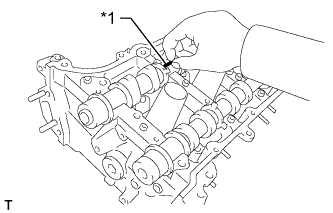 |
Lay a strip of Plastigage across each of the camshaft journals.
| *1 | Plastigage |
Install the camshaft bearing caps (Click here).
Install the camshaft housing (Click here).
Remove the camshaft bearing caps (Click here).
| 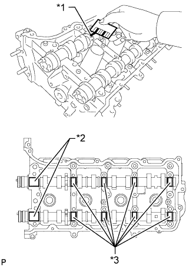 |
Measure the Plastigage at its widest point.
| Item | Specified Condition |
| No. 1 journal | 0.030 to 0.065 mm (0.00118 to 0.00256 in.) |
| Other journals | 0.025 to 0.062 mm (0.000984 to 0.00244 in.) |
| Item | Specified Condition |
| No. 1 journal | 0.10 mm (0.00394 in.) |
| Other journals | 0.09 mm (0.00354 in.) |
| *1 | Plastigage |
| *2 | No. 1 Journal |
| *3 | Other Journals |
| 2. INSPECT CAMSHAFT THRUST CLEARANCE |
Install the camshafts (Click here).
| 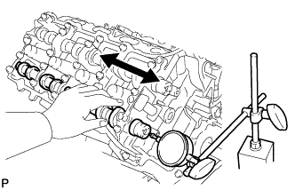 |
Using a dial indicator, measure the thrust clearance while moving the camshaft back and forth.
Perform the inspection above for each camshaft.
| 3. INSPECT COMPRESSION SPRING |
| 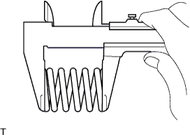 |
Using a vernier caliper, measure the free length of the compression spring.
| 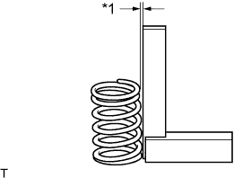 |
Using a steel square, measure the deviation of the compression spring.
| *1 | Deviation |
| 4. INSPECT INTAKE VALVE |
Using a micrometer, measure the diameter of the valve stem.
| 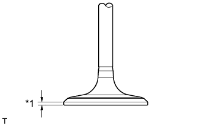 |
Using a vernier caliper, measure the valve head margin thickness.
| *1 | Margin Thickness |
Using a vernier caliper, measure the valve overall length.
| 5. INSPECT EXHAUST VALVE |
Using a micrometer, measure the diameter of the valve stem.
| 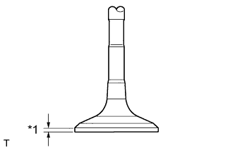 |
Using a vernier caliper, measure the valve head margin thickness.
| *1 | Margin Thickness |
Using a vernier caliper, measure the valve overall length.
| 6. INSPECT VALVE GUIDE BUSH OIL CLEARANCE |
| 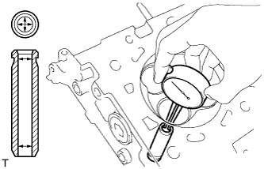 |
Using a caliper gauge, measure the inside diameter of the valve guide bush.
Subtract the valve stem diameter measurement from the valve guide bush inside diameter measurement.
| Item | Specified Condition |
| Intake | 0.025 to 0.060 mm (0.000984 to 0.00236 in.) |
| Exhaust | 0.030 to 0.065 mm (0.00118 to 0.00256 in.) |
| Item | Specified Condition |
| Intake | 0.08 mm (0.00315 in.) |
| Exhaust | 0.10 mm (0.00394 in.) |
| 7. INSPECT INTAKE VALVE SEAT |
| 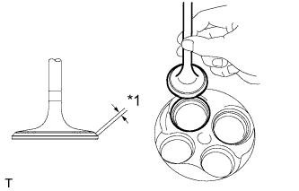 |
Apply a light coat of Prussian blue to the valve face.
Lightly press the valve face against the intake valve seat.
Check the valve face and intake valve seat.
| *1 | Width |
Check that the contact surfaces of the valve seat and valve face are in the middle area of their respective surfaces, with the width between 1.1 to 1.5 mm (0.0433 to 0.0591 in.).
If not, correct the intake valve seat.
Check that the contact surfaces of the intake valve seat and valve face are even around the entire intake valve seat.
If not, correct the intake valve seat.
| 8. INSPECT EXHAUST VALVE SEAT |
| 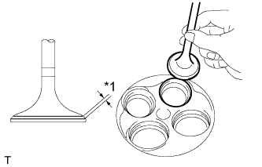 |
Apply a light coat of Prussian blue to the valve face.
Lightly press the valve face against the exhaust valve seat.
Check the valve face and exhaust valve seat.
| *1 | Width |
Check that the contact surfaces of the exhaust valve seat and valve face are in the middle area of their respective surfaces, with the width between 1.1 to 1.5 mm (0.0433 to 0.0591 in.).
If not, correct the exhaust valve seat.
Check that the contact surfaces of the exhaust valve seat and valve face are even around the entire exhaust valve seat.
If not, correct the exhaust valve seat.
| 9. INSPECT CYLINDER HEAD SUB-ASSEMBLY |
| 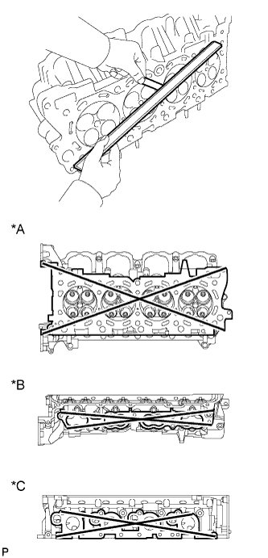 |
Using a precision straightedge and feeler gauge, measure the warpage of the contact surfaces of the cylinder block and manifold.
| Item | Specified Condition |
| Cylinder block side | 0.05 mm (0.00197 in.) |
| Intake manifold side | 0.08 mm (0.00315 in.) |
| Exhaust manifold side | 0.05 mm (0.00197 in.) |
| *A | for Cylinder Block Side |
| *B | for Intake Manifold Side |
| *C | for Exhaust Manifold Side |
Using a dye penetrant, check the intake ports, exhaust ports and cylinder head surface for cracks.
If cracked, replace the cylinder head sub-assembly.